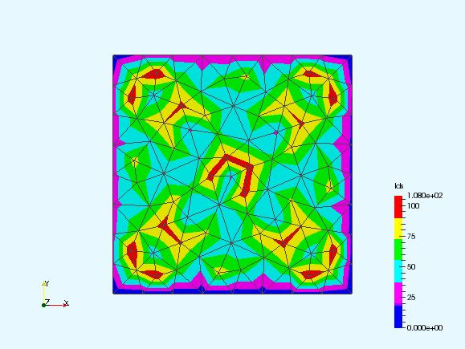
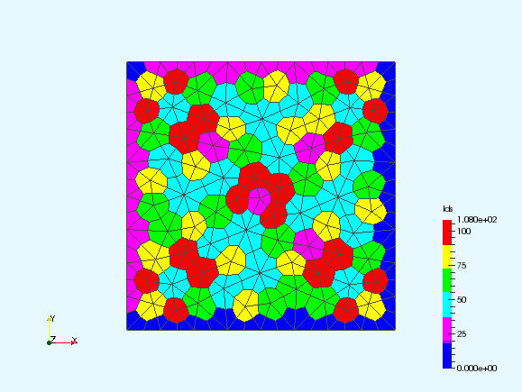

About ParaView
ParaView is an open-source data analysis and visualization application developed by Kitware. It is the visualization tool of choice for AMCG for visualization of Fluidity output.
ParaView Plugins
Paraview allows for user developed plugins, written in C++, to extend its functionality. At their most basic, paraview plugins can simply be new VTK filters, extending the pipeline to generate new output, along with an xml file describing the input requirements and output obligations of the filter.
A skeleton filter
The files for a basic C++ vtk filter looks something like the following:
Compiling plugins
ParaView and VTK both use CMake as their build system. CMake, another kitware product, attempts to automate the process for files based on the recursive processing of text files named CMakeLists.txt placed within the directory structure. For a ParaView plugin the required file looks something like the following:
FIND_PACKAGE(ParaView REQUIRED)
INCLUDE(${PARAVIEW_USE_FILE})
ADD_PARAVIEW_PLUGIN(
Template "0.0"
SERVER_MANAGER_XML Template.xml
SERVER_MANAGER_SOURCES vtkTemplate.h vtkTemplate.cxx
)
For the macros presented here to resolve it is necessary to provide a full development installation of ParaView. If a packaged version is not available for your system this will require building your own version from source. This is typically a fairly simple process once again using cmake. Full instructions are available from the ParaView website.
A Control Volume filter
As a further example, lets build a more useful filter, in this case one to generate the control volume tesselation within a P1DG fluidity output:
